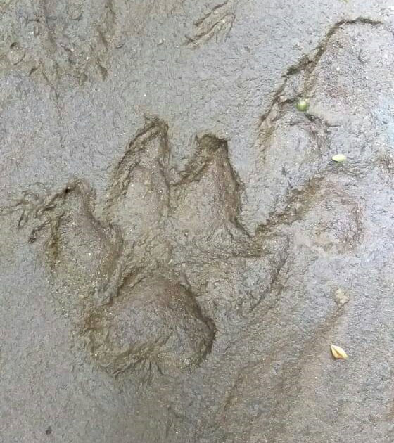

Tim Patroli Objek Wisata Alam Cangar menemukan jejak hewan yang diduga merupakan macan tutul jawa di daerah Pemandian Air Panas Cangar, Sumber Brantas, Bumiaji, Kota Batu. Jejak macan tutul tersebut ditemukan saat petugas dari UPT Taman Hutan Raya R. Soerjo sedang berpatroli. (16/07/2019)
Petugas menemukan jejak yang diduga macan tutul tersebut dibelakang warung makan yang berdekatan dengan pemandian air panas yang merupakan kawasan dari Tahura. Petugas mengambil titik koordinat (7.74119477S 112.53348499E) di lokasi penemuan jejak yang diduga macan tutul tersebut. (16/07/2019)
Panther Pardus atau yang lebih dikenal dengan macan tutul memang diketahui memiliki habitat asli dimana menyukai tipe hutan tropis. Seperti kucing liar lainnya, macan tutul jawa umumnya aktif pada malam hari (nokturnal) dan juga siang hari (diurnal). Umumnya bersifat hidup sendiri (soliter), namun akan terjadi peristiwa bersamaan antara jantan dan betina dewasa pada saat musim kawin. Namun, diketahui bahwa macan tutul sudah lama sekali tidak pernah terlihat.
Satwa yang dilindungi ini memang sangat jarang sekali terlihat, dengan adanya penemuan jejak yang diduga macan tutul ini tentu merupakan kabar baik karena hewan yang sangat langka tersebut masih ada. Namun, masih belum diketahui jumlah pasti dari keberadaan macan tutul tersebut.
Tentunya kita berharap dengan penemuan jejak macan tutul didaerah Pemandian Air Panas Cangar ini tetep lestari keberadaannya, sehingga nantinya dapat terus diwariskan kepada generasi yang akan datang.